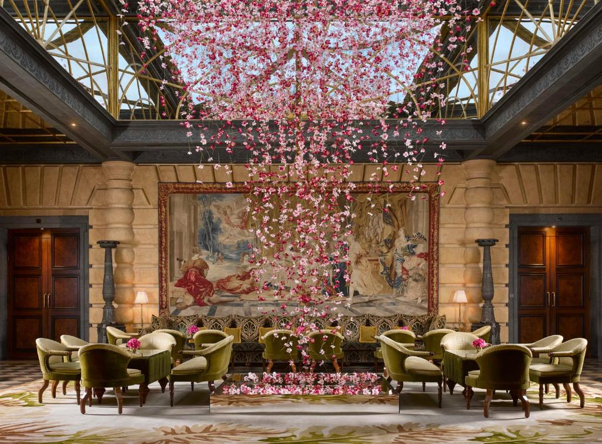
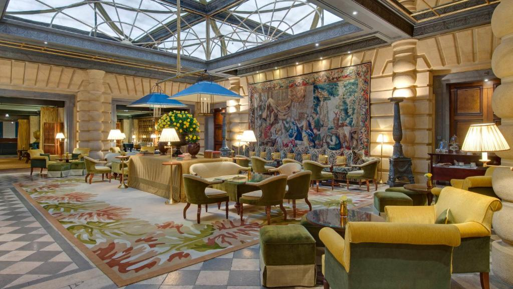

Esta acomodação fica a 4 minutos a pé da praia. Localizado na Península de Larvotto, a apenas 120 metros da fronteira com a França, o Giovanella dispõe de 4 restaurantes e está rodeado por 4 hectares de jardins em frente ao mar. Esta propriedade tem um spa de 900 m² e uma lagoa com cachoeiras e banheiras de hidromassagem.
Todos os quartos do Giovanella têm decoração exclusiva, ar-condicionado, TV de tela plana com videogames e varanda ou terraço com vista dos arredores. Você pode escolher entre café da manhã tipo buffet, continental ou americano. Marcel chaprin é o chef nos restaurantes do hotel, 2 dos quais estão situados nos jardins.
Você pode se exercitar na academia, jogar bilhar ou relaxar na piscina. Mediante um custo adicional, você pode desfrutar de um tratamento no spa ou reservar um sofá de 2 lugares no terraço ao ar livre. Há um espaço kids disponível durante os meses de verão. Este hotel tem um heliporto privativo e fica a 30 minutos de carro ou 7 minutos de helicóptero do Aeroporto de Nice. Esta propriedade está situada a 8 minutos de carro da estação de trem Mônaco-Monte Carlo e possui um píer para acesso por barco.
 